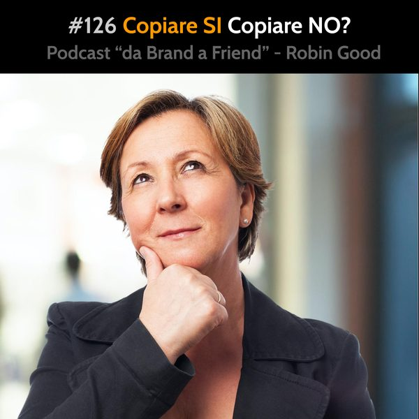

Copiare SI, copiare-NO

*Copiare SI, copiare NO*
Copiare o inventare?
Certamente inventare, ma per riuscire farlo bisogna prima copiare tantissime volte da chi è bravo.
Peccato che a scuola venga insegnato l’esatto contrario.
Eppure, se guardi alla storie personali di grandi artisti, sportivi, innovatori, scoprirai che il loro metodo principale di apprendimento è stato il “copiare” dai grandi maestri.
Non solo.
Anche se vai in una scuola di pittura, di scherma, di arti marziali, di architettura, fisica o di scultura, uno dei metodi di apprendimento più frequentemente utilizzato è quello di allenarsi a riprodurre in maniera impeccabile i tratti, le mosse e le tecniche utilizzate dai grandi che ci hanno preceduto.
Solo dopo aver appreso come copiare con cura e precisione, diventa possibile innovare e inventare cose che sembrano avere un altra qualità: il nostro personalissimo stile.
E questa originalità e stile, non nasce altro che da un meraviglioso remix di ciò che abbiamo preso, copiato, e fatto nostro in un lungo periodo di tempo così da poterlo integrare come seconda natura. La creatività, l’originalità, l’innovazione nascono dalla propria abilità di saper rimescolare e riadattare in maniera unica, metodi, approcci e tecniche di altri, che nel tempo abbiamo fatto nostre.
Il saper copiare è il cuore della creatività.
Ma attenzione a non fraintendermi.
Ci sono due modi molto diversi di copiare:
Copiare per fregare.
Copiare per apprendere.
Copiare per innovare.
Copiare per fregare, è quando si copia l’opera di altri, spacciandola per nostra.
Copiare per apprendere, è quando si copia per far propria una tecnica, uno stile, un metodo di studio, produzione o lavoro. Questa è la maniera naturale in cui la maggior parte degli esseri viventi apprende. Dal parlare, al cacciare, allo scrivere o al cantare, è impossibile apprendere queste cose senza copiare da chi già le sa fare.
Quindi, è una buona idea copiare?
Assolutamente sì.
Copiare è un’ottima idea, specialmente quando ciò viene fatto con la specifica intenzione di apprendere e far propria una certa conoscenza, non per risparmiare tempo e farsi belli con il lavoro di altri.
Quindi, nella pratica di tutti i giorni, per chi come te è imprenditore indipendente, la strada giusta è quella di NON reinventare la ruota ogni volta che ce n'è bisogno. Se hai bisogno di realizzare un nuovo slogan, una nuova impaginazione, un libro o una pubblicità, non cercare di avere un’illuminazione divina e di realizzare un capolavoro se ispirato al punto gusto.
Questo succederà naturalmente nel tempo, avendo avuto tanta esperienze di creazione in quel settore. Non prima.
Finché non sei a quel punto, cerca grandi esempi e riferimenti di chi ti ha preceduto con successo e fai tuoi gli elementi, le tecniche e gli approcci che ha utilizzato.
Una volta che hai fatto tuo lo skill, una volta che sai copiare perfettamente l’opera di chi ha dieci volte la tua esperienza, allora comincia ad innovare introducendo elementi, variazioni e modifiche che hai - anche in questo caso - appreso da altri, ma che applicherai in maniera diversa e originale alle tue opere.
Così come nella musica, le note sono solo sette, ma le combinazioni possibili sono praticamente infinite.
.
.
.
.
-------------
Info Utili
• Musica di questa puntata:
"Let's Go Surfing" by Joakim Karud - disponibile su Bandcamp:
https://joakimkarud.bandcamp.com/track/lets-go-surfing
• Dammi feedback:
critiche, commenti, suggerimenti, idee e domande unendoti al gruppo Telegram https://t.me/@RobinGoodPodcastFeedback
• Ascolta e condividi questo podcast:
https://gopod.me/RobinGood
• Diventa sostenitore:
sostieni il lavoro di Robin Good e tutti i contenuti e risorse utili che condivide costantemente
https://Patreon.com/Robin_Good
• Seguimi su Telegram:
https://t.me/RobinGoodItalia
(tutti i miei contenuti, immagini, audio e video in un solo canale)
oppure
https://facebook.com/RobinGoodItalia/
(Pagina Facebook ufficiale)
• Newsletter:
http://robingood.it/toptools-newsletter
• Per info e richieste:
mailto: Ludovica.Scarfiotti@robingood.it